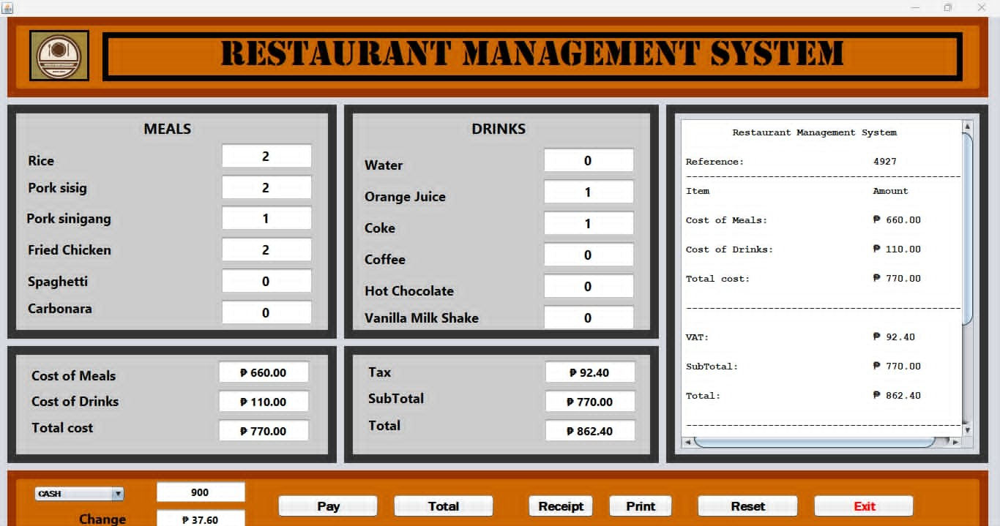

Point of Sale (POS) System
A desktop-based Point of Sale (POS) system developed as an academic project.
The application enables users to process customer orders by selecting menu items,
entering order quantities, automatically calculating taxes and totals, and
generating a printable receipt.
Tech Stack
Java
NetBeans
My Role
- Customized the user interface using the NetBeans GUI Builder.
- Implemented order quantity input and price calculations.
- Implemented automatic tax and total amount computation.
- Developed receipt generation with unique reference numbers for each transaction.
Project Screenshot

← Back to Portfolio